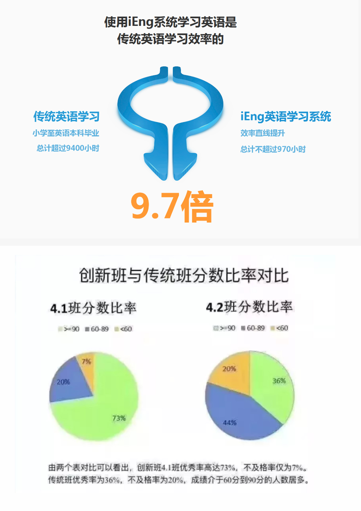
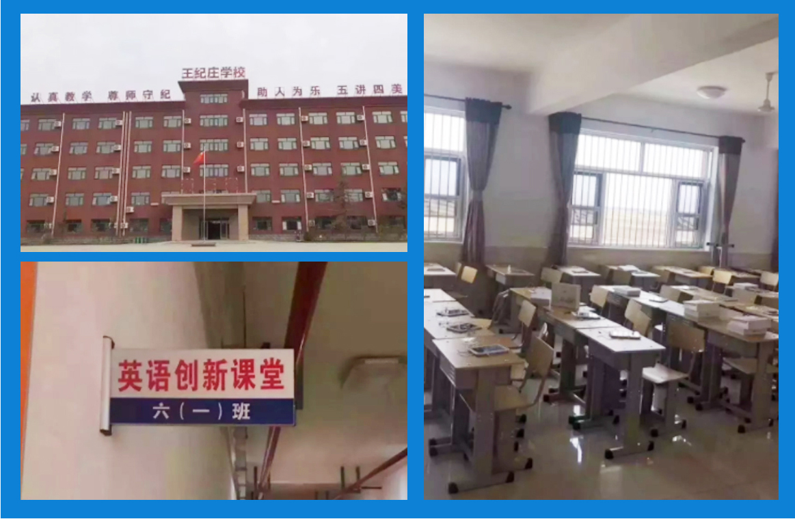
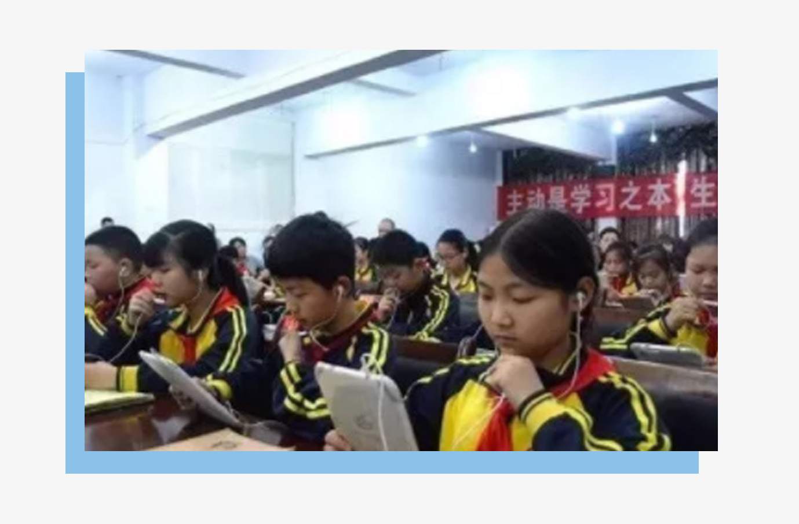
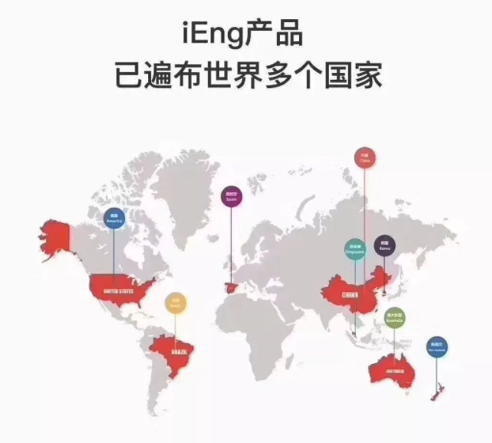
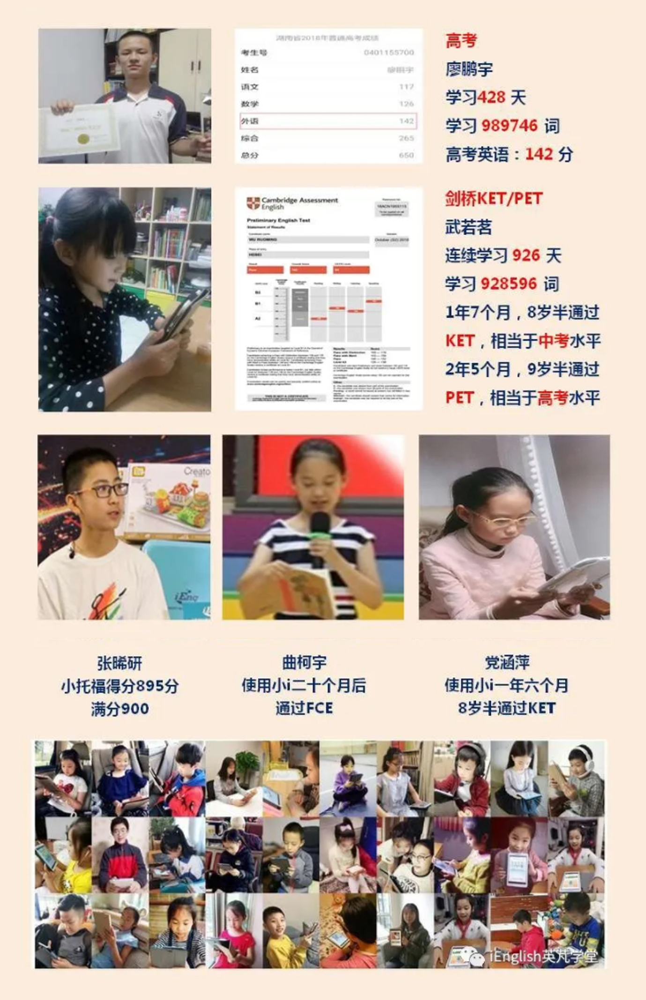
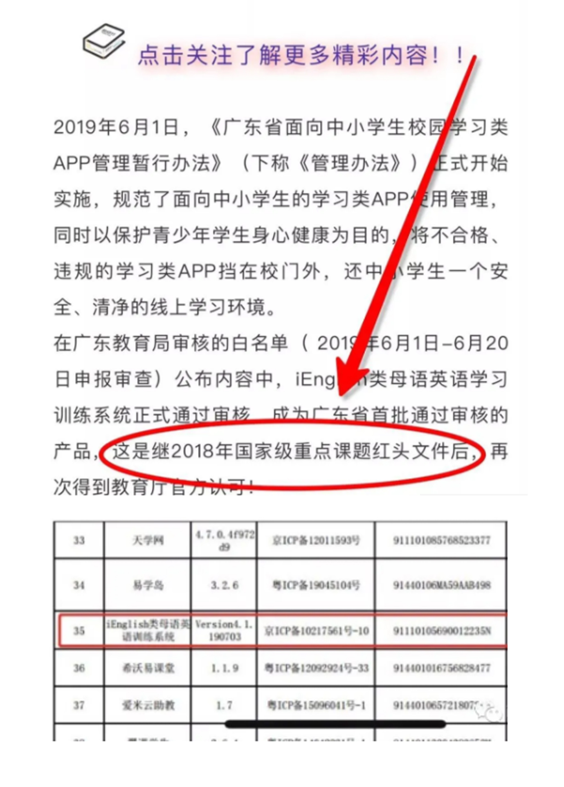

小i进入全国多所中小学课堂
iEnglish类母语英语学习训练系统，2015年iEnglish上线后，先在国内多所学校开展实验教学，都取得了良好的成绩。直到2018年才开始正式推向公众市场，而2016年第一批学生，经过1000多天的学习，都取得了巨大的进步。如今，很多学校都已经将iEnglish引进课堂，开展类母语的学习体系，打造一个高效创新的课堂模式。

广州新昌学校iEnglish创新班，
经过一学期的阅读和学习，
比传统班级平均分数高出17分
iEnglish用数据来证明实力！不要再浪费孩子的宝贵时间
经过一学期的阅读和学习，
比传统班级平均分数高出17分
iEnglish用数据来证明实力！不要再浪费孩子的宝贵时间

廊坊大成县王纪庄学校
校长英语专业出身
全校第一批400人参与创新课堂教改。
他说：我们全力以赴必将把学校共同打造成为廊坊地区的
外国语特色学校。
随处可见读书郎，
校园读书氛围大增

广东高州一中杜校长高瞻远瞩，
看透英语中高考改革趋势，
大力推进英语教改向语用方向发展。
短短三个星期报名1000人。
学生利用碎片化时间听读，
看透英语中高考改革趋势，
大力推进英语教改向语用方向发展。
短短三个星期报名1000人。
学生利用碎片化时间听读，
随处可见读书郎，
校园读书氛围大增。
此情此景，
校长决定启动初中部
iEnglish创新课堂。
校园读书氛围大增。
此情此景，
校长决定启动初中部
iEnglish创新课堂。

零基础 大效果

四川达州耀华育才学校，上学期她的班级英语平均分达到
95分左右，即使是毫无基础的转校生，经过三个月练习，
也取得了80多分的成绩。
95分左右，即使是毫无基础的转校生，经过三个月练习，
也取得了80多分的成绩。

轻松搞定各种考试

iEngish的类母语学习模式还被列入国家重点课题开展课
题研究,并在各地实验学校进行大量的实践认证,取得了
显著成效。
